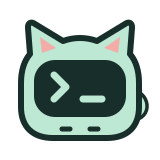

用目标，开始工作
检查项目、修改文件、运行测试。用自然语言交给 DSH，按当前工作区权限执行。

SuperTerminalMADE FOR DSH一边对话，一边把事情做完。用自然语言，让 DSH 读取文件、修改代码、执行命令。
小小终端，认真干活。AI 任务、终端讨论组、原生 CLI。
“修复购物车合计，并运行测试。”
少一点切换，多一点完成。
终端理解你的目标，也让每一步执行都有迹可循。
检查项目、修改文件、运行测试。用自然语言交给 DSH，按当前工作区权限执行。
查看实际步骤与输出，展开细节，阅读清晰的结果，随时复制需要的代码。
继续追问，或在运行中追加要求。需要停下时，可停止 AI 会话及其后台任务。
TERMINAL GROUPalpha.9
把终端拉进讨论组，选择这次请谁发言。让不同视角形成清楚的下一步，每条回复都有名字，也有来源。
拖入终端，或从列表选择成员。明确由终端 DSH AI，还是独立 CLI 任务参会。
一轮收集意见，两轮相互讨论。选择一位作者，整理共识、分歧与行动项。
确认执行者与验收标准后开始。收到结果，再验收或要求返工。
DSH AI 沿用所属终端的会话。Pi、Codex 以独立 CLI 任务参会，不续接已打开的 CLI 聊天。Kimi Code 保留原生终端交互，暂不支持自动 CLI 参会。结论注明作者，供你核对，不代表全员表决。
SIDE TERMINAL
把终端放在 DSH 右侧栏。可以关联当前对话，也可以独立运行，切换对话时继续保留自己的工作区。
一片空间，许多可能。
给每个任务一个窗格。选中的空窗格展开 AI 与 CLI 选项，其余空窗格保留“添加终端”。自由调节大小、分屏或放大，按你安排的布局工作。
六种主题色，亮暗分别选默认薄荷绿，还有雾蓝、鸢尾紫、琥珀、玫瑰、石墨。更多 → 外观，即时切换、记住偏好，不重启终端。
上下文，有明确的归属项目与会话归属在同一行，选中内容明确交给当前任务。
交接，可以一路追踪交给 Pi 或 Codex，验收结果，继续返工。
熟悉的智能体，同一个工作区。
筛选已安装的智能体 CLI，按名称或命令搜索，查看版本与状态依据。检测失败时保留上次结果和检查时间，重试成功后再启动。
各 CLI 使用自己的账号与模型配置。目前受管后台交接支持 Pi、Codex；无法核实的额度会显示为未知。
下一件事，从这里开始。
dsh plugin --profile web add https://github.com/Harzva/dsh-superterminal/releases/download/v0.1.0-alpha.17/harzva-dsh-terminal-0.1.0-alpha.17.tgz安装完成后，重启所选 DSH 配置（此命令为 web）。点击输入栏中的“终端”，或输入 /terminal 打开右侧栏。执行 AI 任务前，请先配置可用的 DSH 模型。
GOOD TO KNOW
SuperTerminal 是 DSH 插件。在 DSH 中提供 AI 任务界面与原生终端窗格，使用 DSH 的运行时、工作区权限和模型配置。
可以。你可以关联当前对话，也可以使用独立工作区会话，在切换对话时继续保留。两种范围中的已有终端分别归属各自会话。
已安装的 CLI 可以在原生终端窗格中运行。目前受管后台交接支持 Pi 与 Codex 协议，可验收结果并关联返工。打开 CLI 与管理后台任务是两项独立能力。
加入组不会自动广播旧终端日志，你可以在发送前选择并预览附上的内容。各终端 DSH AI 保留自己的会话上下文，只把本次回复加入组内讨论。停止后保留已完成的发言；重启后中断的讨论不会自动重跑，需要你明确发起下一次问题。
alpha.17 支持 macOS、Node.js 24+ 与官方 DSH 0.1.1-rc.2。SSH 远程终端需要已有的免交互连接与远端 tmux。alpha.13 已在 macOS 和 Linux 远端验证连接、尺寸调整、断线重连与任务清理，alpha.17 沿用这项能力。远端模型执行和额度不在该次验收范围内；当前不保证跨 DSH 重启续接。可运行远端 Agent CLI，DSH AI 执行与讨论组仍限本机。当前暂不支持 Windows 或其他 DSH 版本。